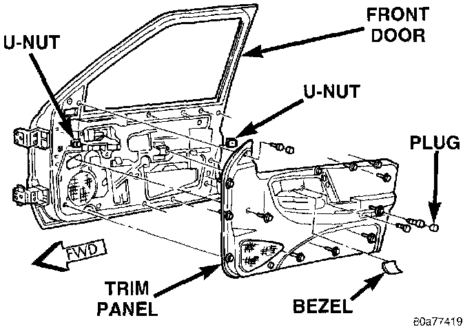
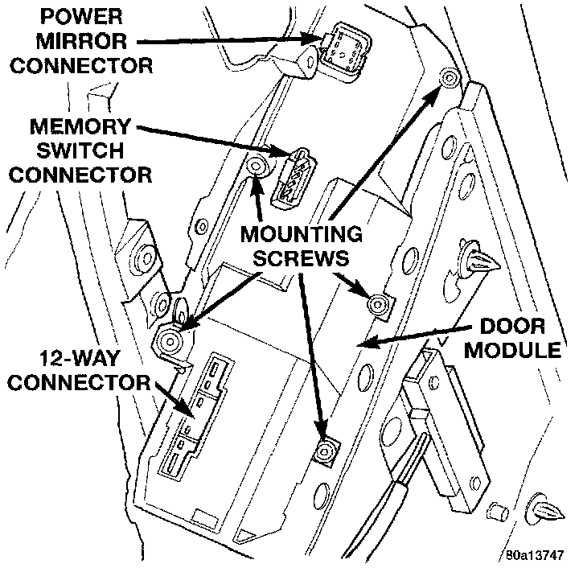

Power Mirror Control Module: Service and Repair
REMOVAL1. Disconnect and isolate the battery negative cable.
2. Remove the bezel near the inside door latch release handle by inserting a straight-bladed screwdriver in the notched end and prying gently upwards.
Front Door Trim Panel Remove/Install:

3. Remove the door trim panel mounting screw located in the bezel opening near the inside door latch release handle.
4. Remove the trim cap and screw near the rear of the door armrest.
5. Remove the trim cap and screw at the upper front corner of the trim panel.
6. Remove the screw located above the front door speaker grille.
7. Using a wide flat-bladed tool such as a trim stick, pry the trim panel away from the door around the perimeter and remove the trim panel.
NOTE: To aid in the removal of the trim panel, start at the bottom of the panel.
8. Unplug the wire harness connectors from the door module and the door courtesy lamp, if equipped.
Door Module Remove/Install:

9. Remove the five screws that secure the door module to the door trim panel.
10. Remove the door module from the trim panel.
11. Reverse the removal procedures to install.
NOTE: If a new door module is installed, the programmable features must be enabled and/or disabled to the customer's preferred settings. Use a DRB scan tool and the proper Computers and Control Systems/Body Control Module/Testing and Inspection Procedures to perform these operations.